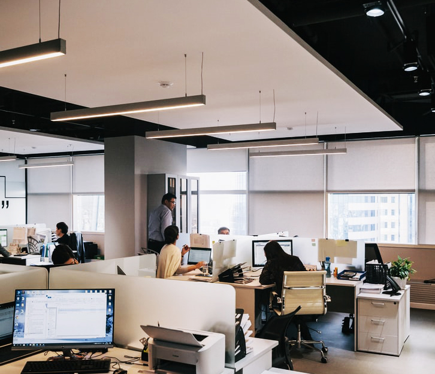

통합디자인민원센터
핵심서비스 이행표준
디자인 가치 창출

- 서비스디자인 프로세스 확산
- 서비스디자인 방법론을 통한 비즈니스 혁신방안이 산업과 사회 전 분야에서 도입될 수 있도록 서비스디자인 소개 및 활용 연구보고서 연 1회 이상 발간, 교육 콘텐츠 제공 및 운영지침 보급 확산 활동 등을 실천하여 서비스디자인 인식을 확산하겠습니다.
- 기업 디자인 지원
- 2020년까지 혁신기업 100개사를 육성하여 경영 전반에 디자인이 활용될 수 있도록 하고, 디자인 관여도가 높은 유망 스타트업 상품 발굴 및 사업화를 지원하여 디자인 혁신성장을 주도하겠습니다.
- 플랫폼을 통한 디자인 주도의 신제품개발 지원
- 디자인플랫폼을 구축하여 지식데이터베이스와 신제품개발 방법론을 제공하고, 2020년까지 중소제조기업 200개사의 디자인 주도 신제품개발을 지원하겠습니다.
※ 플랫폼 활용기업 목표치 : (19년말) 100개사, (20년말) 200개사 - 미래 신시장 창출을 위한 선행연구 지원
- 4차 산업혁명 유망기술과 융합한 선행디자인 연구를 추진하고, 매년 10회 이상 세미나 등 연구결과물 공유회를 개최하여 연구결과 확산을 도모하겠습니다.
디자인 글로벌 경쟁력 강화
- 디자인 전시·시상제도 고도화
- 국내 최대 규모의 디자인 성과공유 행사를 개최하여 한국디자인의 우수성을 널리 홍보하고, 공모전 통합 온라인 플랫폼을 구축하여 시상제도 참여자의 편의성을 개선하겠습니다.
- 디자인 전문인재 양성
- 4차 산업혁명 시대에 필요로 하는 디자인·신기술 융합 인재의 육성을 위하여 혁신적인 교육시스템 및 글로벌 교육 프로그램을 제공하고, 2020년까지 10개교 이상의 전문대학원 과정 운영을 지원하겠습니다.
- 온라인 지식·정보 콘텐츠 확충
- 디자인 전략정보 약 78만 건을 보유하고 연 회원 34만 명, 연간 110만 명이 이용하는 designdb.com 웹사이트를 통하여 분야별 최신 디자인 콘텐츠 서비스를 제공하겠습니다.
※ 전략정보 콘텐츠 목표치 : (18년말) 800건, (19년말) 960건, (20년말) 1,140건
-
- 사용자 중심의 연구기반 강화
- 국내 유일의 디자인 씽크탱크(Think tank) 기관으로서 국내외 디자인산업 정보를 수집·분석하여 수요자 맞춤형 디자인 정책연구보고서를 연 1회 발간하겠으며, 디자인산업 전반의 정확한 기초조사를 통하여 객관적이고 신뢰성 있는 산업디자인통계 자료구축을 연 1회 실시하겠습니다.
디자인을 통한 사회적 가치 실현
- 디자인 권리보호
- 디자인관련 거래과정에서 발생하는 불공정거래 및 지식재산권 분쟁 등에 대한 법률상담･자문서비스를 제공하고, 유사피해를 줄일 수 있도록 법률자문 사례집을 연 1회 제작･배포하겠습니다. 디자인표준계약서 활용을 유도하여 디자인용역 당사자간의 권리･의무관계를 명확화함으로써 분쟁을 미연에 방지하겠습니다.